Almacena sin preocuparte
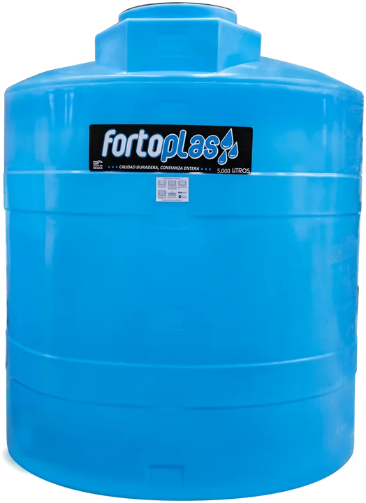
Tinacos tricapa y bicapa, tambos y cisternas de 200 a 10,000 litros. Una reserva de agua lista para tu familia, tu negocio o tu terreno.
0%
CASSAN
COMERCIALIZADORA
Preparando el agua…
Santa Cruz Amilpas, Oaxaca · Almacenamiento de agua
Soluciones de agua para tu hogar
Tinacos, cisternas, biodigestores y calentadores solares con productos de alta calidad, precios competitivos y atención personalizada para que ahorres agua, energía y dinero.
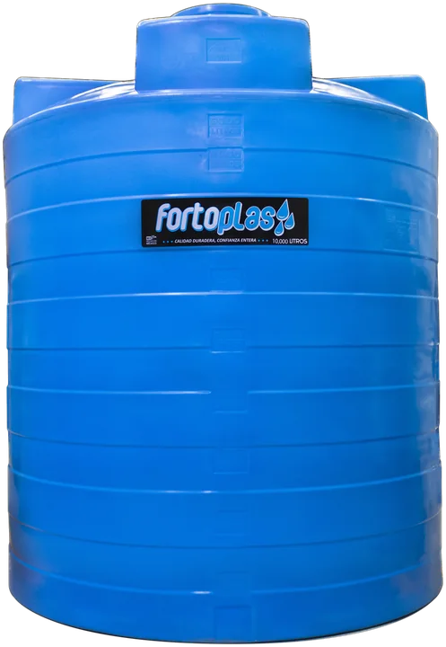
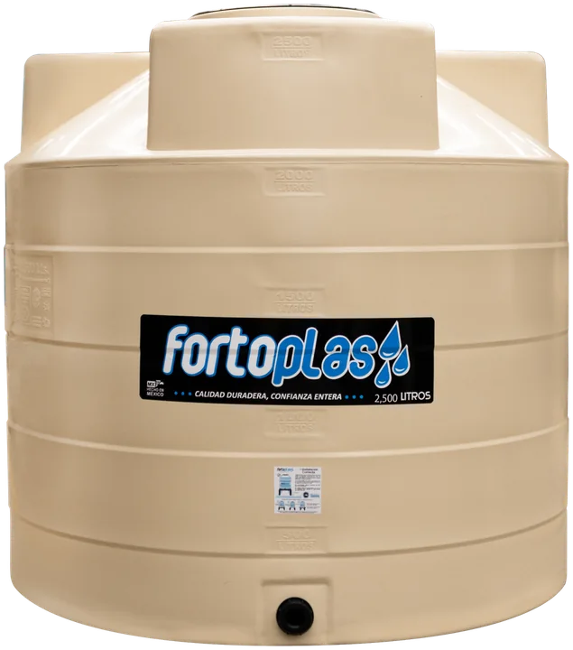
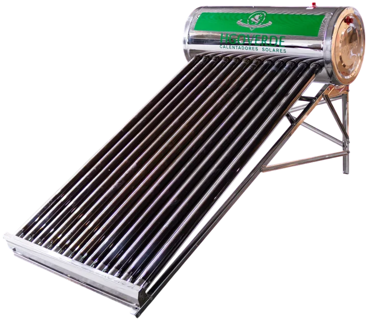
* Garantía indicada en tinacos Tecno>Plast. Pregunta a un asesor por condiciones y alcances.
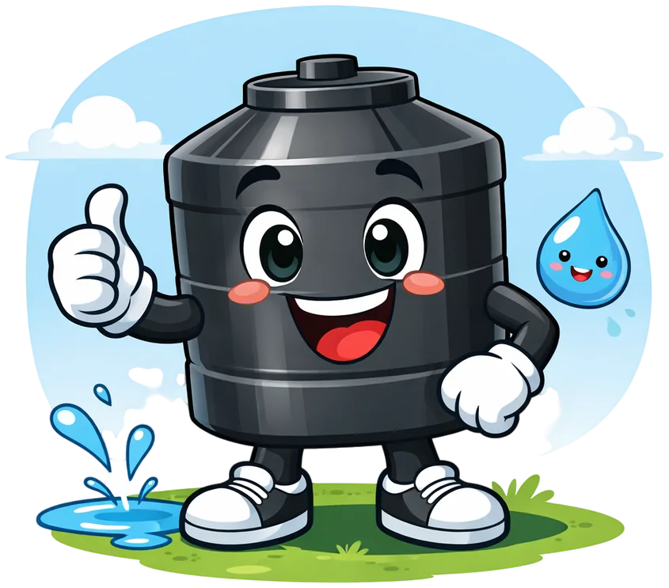
Quiénes somos
En Cassan Comercializadora somos un negocio comprometido con ofrecer soluciones prácticas y eficientes para el hogar y el negocio, enfocadas en el ahorro de agua, energía y dinero.
Brindamos productos de alta calidad, precios competitivos y atención personalizada, garantizando durabilidad, confianza y satisfacción para nuestros clientes. Cada producto que ofrecemos tiene un propósito: que nunca te falte agua.
Tinacos, tambos y cisternas para tener reserva siempre lista.
Calentadores solares que aprovechan el sol de todos los días.
Precios competitivos y productos duraderos que no pagas dos veces.
Soluciones
Almacena, calienta, sanea y equipa. Desde un tambo de 200 litros hasta una cisterna de 10,000: encuentra la solución exacta para tu proyecto.

Tinacos tricapa y bicapa, tambos y cisternas de 200 a 10,000 litros. Una reserva de agua lista para tu familia, tu negocio o tu terreno.
Calentadores solares HGOVERDE de 8 a 15 tubos para 2 a 6 personas. Agua caliente con la energía del sol y menos gasto en gas.
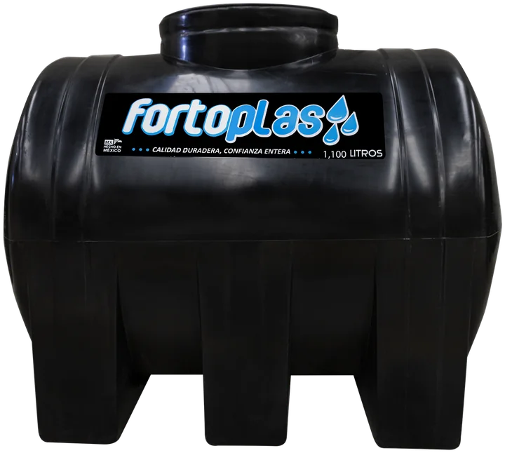
Biodigestores de 600, 1,300 y 3,000 litros para tratar aguas residuales y pipas transportadoras para llevar agua justo donde la necesitas.
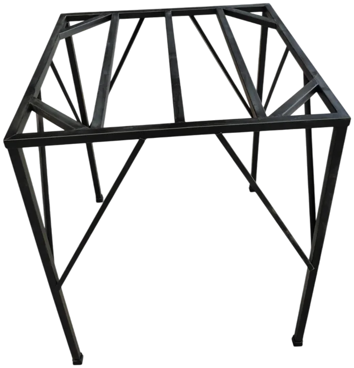
Bases reforzadas de PTR, accesorios, tapas para cisterna, lavaderos, juegos de baño y tarjas de cocina. Todo lo que completa tu proyecto.
Catálogo 2026
Elige la línea, selecciona la capacidad y cotiza al instante por WhatsApp. Sin vueltas, sin letra chiquita.
15 líneas de producto · 60 modelos y medidas
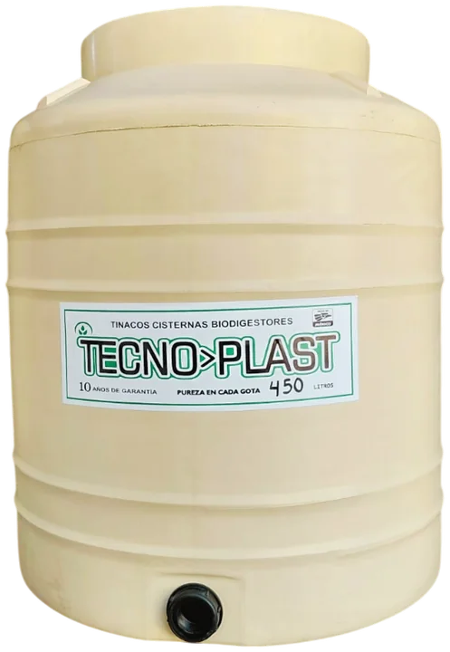
Tres capas que ayudan a bloquear la luz para mantener tu agua más limpia. Incluye flotador, válvula de llenado, jarro de aire y multiconector.
| Modelo | Capacidad | Altura | Diámetro | Marca |
|---|---|---|---|---|
| 450 L | 450 L | 1.00 m | 82 cm | Tecno>Plast |
| 750 L | 750 L | 1.25 m | 93 cm | Tecno>Plast |
| 1,100 L | 1,100 L | 1.40 m | 1.08 m | Tecno>Plast |
| 1,200 L | 1,200 L | 1.51 m | 1.08 m | Tecno>Plast |
| 1,300 L | 1,300 L | 1.50 m | 1.08 m | Tecno>Plast |
| 2,000 L | 2,000 L | 1.25 m | 1.53 m | Fortoplas |
| 2,500 L | 2,500 L | 1.57 m | 1.53 m | Fortoplas |
| 3,000 L | 3,000 L | Consultar | Consultar | Fortoplas |
| 3,500 L | 3,500 L | 1.72 m | 1.72 m | Fortoplas |
| 3,500 L negro | 3,500 L | 1.72 m | 1.72 m | Fortoplas |
| 5,000 L | 5,000 L | 2.18 m | 1.72 m | Fortoplas |
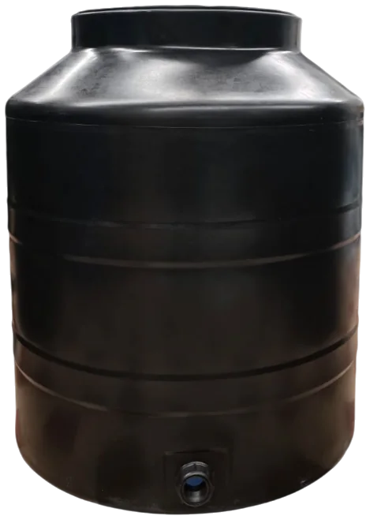
Resistente y práctico para el uso diario en tu casa o negocio. Incluye flotador, válvula de llenado, jarro de aire y multiconector.
| Modelo | Capacidad | Altura | Diámetro | Marca |
|---|---|---|---|---|
| 450 L | 450 L | 1.00 m | 82 cm | Tecno>Plast |
| 750 L | 750 L | 1.25 m | 93 cm | Tecno>Plast |
| 1,100 L | 1,100 L | 1.40 m | 1.08 m | Tecno>Plast |
| 1,200 L | 1,200 L | 1.51 m | 1.08 m | Tecno>Plast |
| 1,300 L | 1,300 L | 1.50 m | 1.08 m | Tecno>Plast |
| 2,000 L | 2,000 L | 1.25 m | 1.53 m | Fortoplas |
| 2,500 L | 2,500 L | 1.57 m | 1.53 m | Fortoplas |
| 3,000 L | 3,000 L | Consultar | Consultar | Fortoplas |
| 5,000 L | 5,000 L | 2.18 m | 1.77 m | Fortoplas |
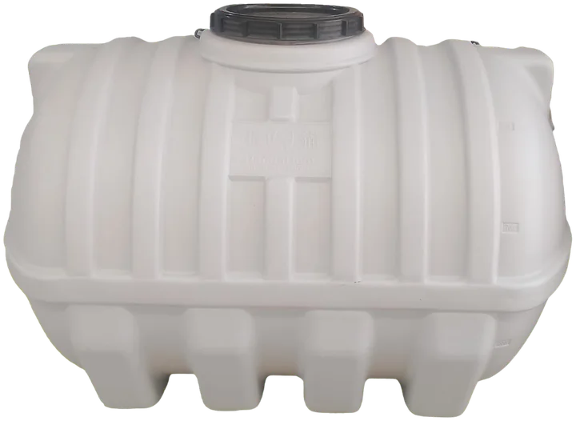
Ideal para espacios donde un tinaco vertical no cabe: gran capacidad en un perfil bajo.
| Modelo | Capacidad | Altura | Diámetro |
|---|---|---|---|
| 750 L | 750 L | 1.25 m | 93 cm |
| 1,100 L | 1,100 L | 1.25 m | 93 cm |
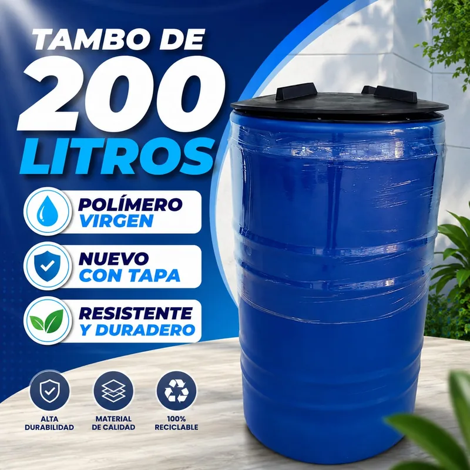
El clásico tambo de plástico para almacenar agua en casa, patio o negocio. Disponible en ocho colores.
| Modelo | Capacidad | Altura | Diámetro | Marca |
|---|---|---|---|---|
| 200 L | 200 L | 93 cm | 55 cm | Tecno>Tambos |
| 300 L | 300 L | 95 cm | 67 cm | Tecno>Tambos |
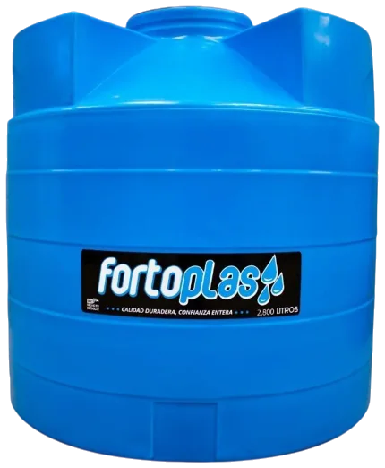
Reserva de agua de 2,800 a 10,000 litros para casas, edificios y negocios. Se venden sin equipo.
| Modelo | Capacidad | Altura | Diámetro | Equipo | Marca |
|---|---|---|---|---|---|
| 2,800 L | 2,800 L | 1.67 m | 1.54 m | Sin equipo | Fortoplas |
| 3,000 L | 3,000 L | 1.75 m | 1.47 m | Sin equipo | Tecno>Plast |
| 5,000 L | 5,000 L | 2.20 m | 1.84 m | Sin equipo | Fortoplas |
| 10,000 L | 10,000 L | 2.80 m | 2.32 m | Sin equipo | Fortoplas |
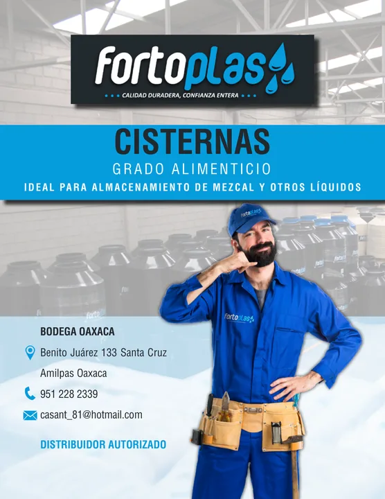
Grado alimenticio, ideal para mezcalerías y purificadoras. Polietileno 100% virgen, rotomoldeada en una sola pieza y con 7 años de garantía.
| Modelo | Capacidad | Altura | Diámetro |
|---|---|---|---|
| 200 L | 200 L | 85 cm | 56 cm |
| 450 L | 450 L | 99 cm | 85 cm |
| 750 L | 750 L | 1.25 m | 97 cm |
| 1,100 L | 1,100 L | 1.41 m | 1.08 m |
| 1,200 L | 1,200 L | 1.40 m | 1.09 m |
| 2,000 L | 2,000 L | 1.25 m | 1.53 m |
| 2,500 L | 2,500 L | 1.57 m | 1.53 m |
| 3,500 L | 3,500 L | 1.72 m | 1.72 m |
| 5,000 L | 5,000 L | 2.13 m | 1.77 m (ancho) |
| 3,500 L horizontal | 3,500 L | 1.30 m | 2.84 m (largo) |
| 10,000 L | 10,000 L | 2.80 m | 2.30 m |
Tratamiento práctico de aguas residuales para hogares y negocios, con fondo cónico y construcción resistente.
| Modelo | Capacidad | Altura | Diámetro | Marca |
|---|---|---|---|---|
| 600 L | 600 L | 1.68 m | 0.86 m | Fortoplas |
| 1,300 L | 1,300 L | 1.64 m | 1.15 m | Fortoplas |
| 3,000 L | 3,000 L | 2.42 m | 1.58 m | Fortoplas |
Lleva y almacena agua justo donde la necesitas con una pipa transportadora de 1,100 o 3,500 litros.
| Modelo | Capacidad | Altura | Diámetro | Marca |
|---|---|---|---|---|
| 1,100 L | 1,100 L | 1.12 m | 1.45 m | Fortoplas |
| 3,500 L | 3,500 L | 1.30 m | 1.26 m | Fortoplas |
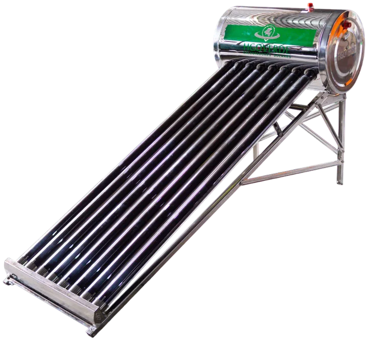
Calentadores solares HGOVERDE de tubos: elige según las personas en casa, de 2 a 6. Agua caliente con la energía del sol.
| Modelo | Tubos | Capacidad | Marca |
|---|---|---|---|
| 8 tubos | 8 | 2 personas | HGOVERDE |
| 10 tubos | 10 | 3 personas | HGOVERDE |
| 12 tubos | 12 | 4 personas | HGOVERDE |
| 15 tubos | 15 | 6 personas | HGOVERDE |
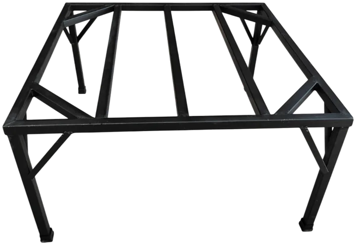
Estructura de PTR para elevar tu tinaco y ganar presión de agua. Medidas de 50 cm a 1.20 m y una versión reforzada para tinacos de 3,000 L.
| Modelo | Altura | Material | Para |
|---|---|---|---|
| 50 cm | 50 cm | PTR | — |
| 100 cm | 100 cm | PTR | — |
| 1.20 m | 1.20 m | PTR | — |
| Reforzada 3,000 L | 50 cm | PTR | Tinacos de 3,000 L |
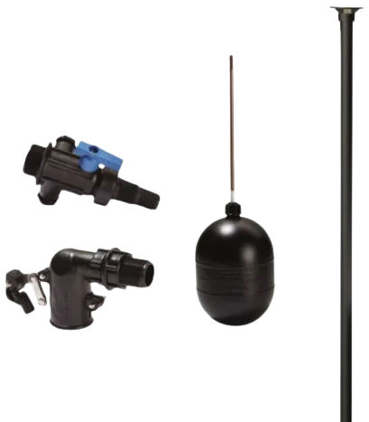
Flotador, válvula de llenado, jarro de aire y multiconector. Todos nuestros tinacos lo incluyen.
| Modelo | Incluye | Y además |
|---|---|---|
| Kit | Flotador | Válvula, jarro y multiconector |
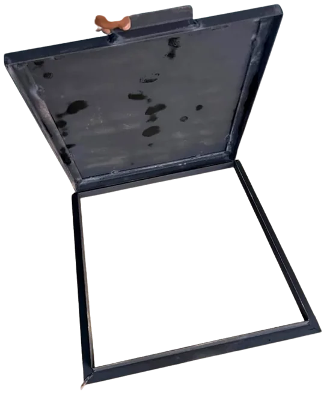
Estructura metálica cuadrada, ideal para cisternas. Protege tu reserva y te da acceso cuando lo necesitas.
| Modelo | Tipo | Ideal para |
|---|---|---|
| Tapa | Estructura metálica cuadrada | Cisternas |
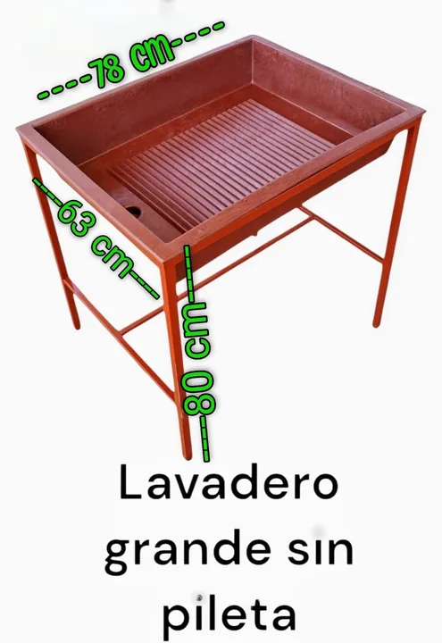
Lavadero grande en dos colores, con o sin pileta, y modelo jabonero.
| Modelo | Largo | Ancho | Modelo |
|---|---|---|---|
| Sin pileta | 78 cm | 63 cm | Sin pileta |
| Con pileta | 92 cm | 74 cm | Con pileta |
| Jabonero | 80 cm | 88 cm | Jabonero |
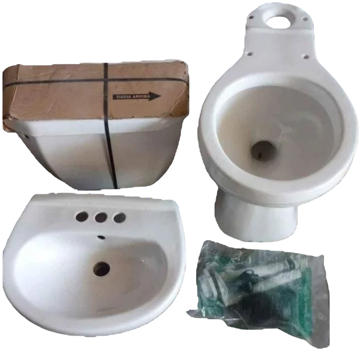
Incluye taza, tanque, lavabo y herrajes. Todo lo que necesitas para estrenar baño.
| Modelo | Incluye | Color |
|---|---|---|
| Completo | Taza, tanque, lavabo y herrajes | Blanco |
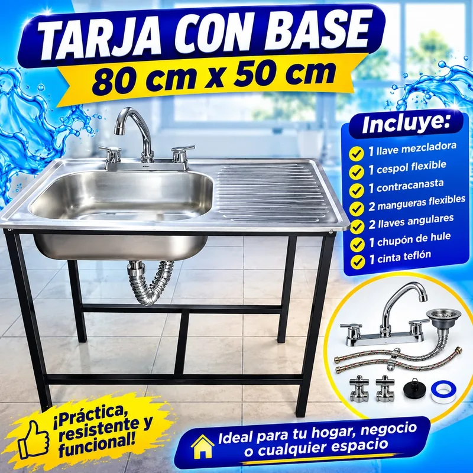
Tarja para cocina con base de PTR de 1" y accesorios incluidos.
| Modelo | Incluye | Y además |
|---|---|---|
| 80 × 50 cm | Base de PTR de 1" | Accesorios |
| 1 m × 50 cm | Base de PTR de 1" | Accesorios |
Promociones
Promociones con regalo incluido en tinacos, lavaderos y juegos de baño. Escríbenos por WhatsApp y te confirmamos precio y disponibilidad.
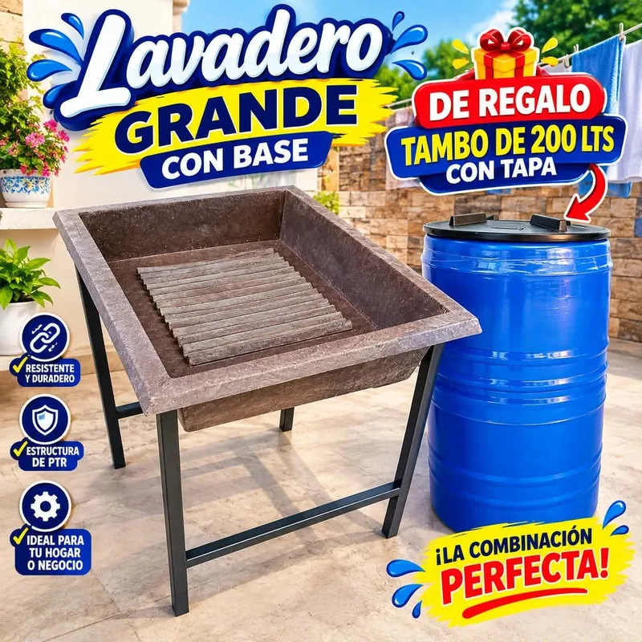
Lavadero grande con base de PTR, resistente y duradero, ideal para tu hogar o negocio. De regalo, un tambo de 200 L con tapa.
Quiero esta promoción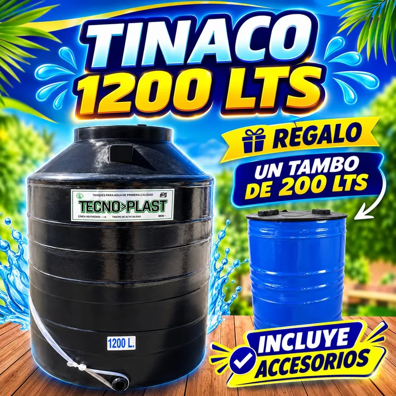
Tinaco Tecno>Plast de 1,200 litros con accesorios incluidos. De regalo, un tambo de 200 L.
Quiero esta promoción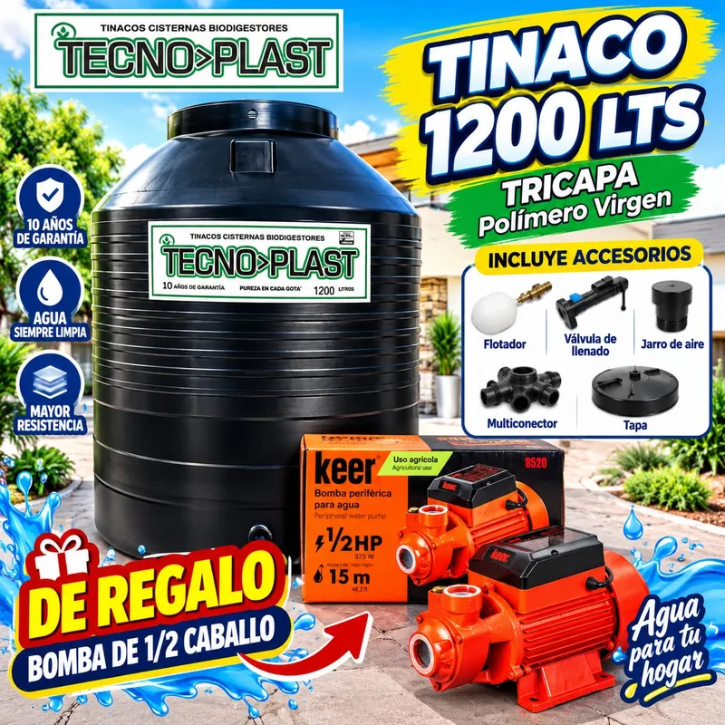
Tricapa de polímero virgen con 10 años de garantía y accesorios incluidos: flotador, válvula de llenado, jarro de aire, multiconector y tapa. De regalo, una bomba de ½ caballo.
Quiero esta promoción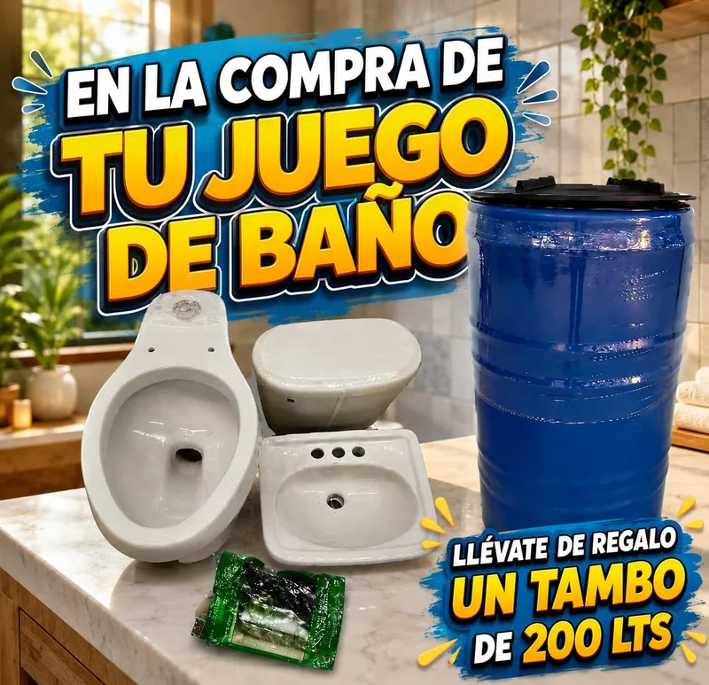
En la compra de tu juego de baño, llévate de regalo un tambo de 200 L.
Quiero esta promoción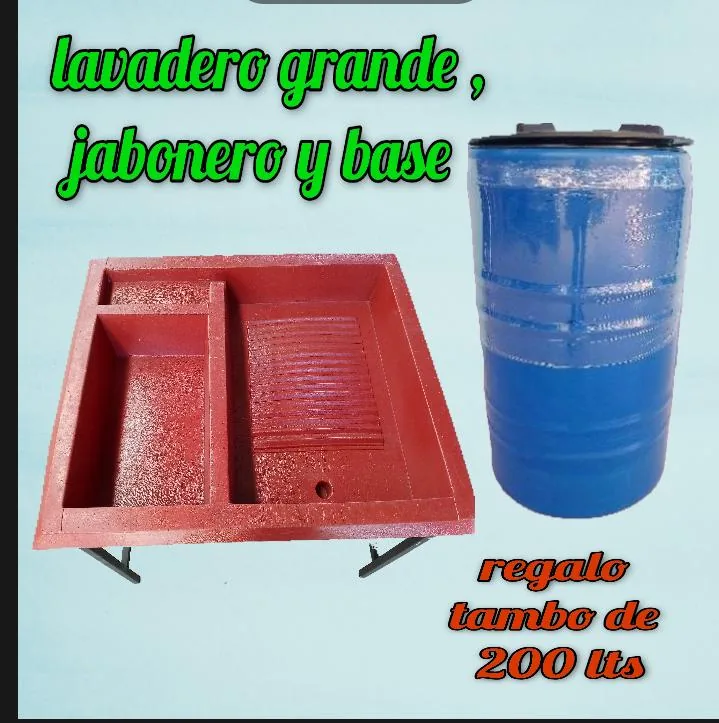
Lavadero grande con jabonero y base. De regalo, un tambo de 200 L.
Quiero esta promoción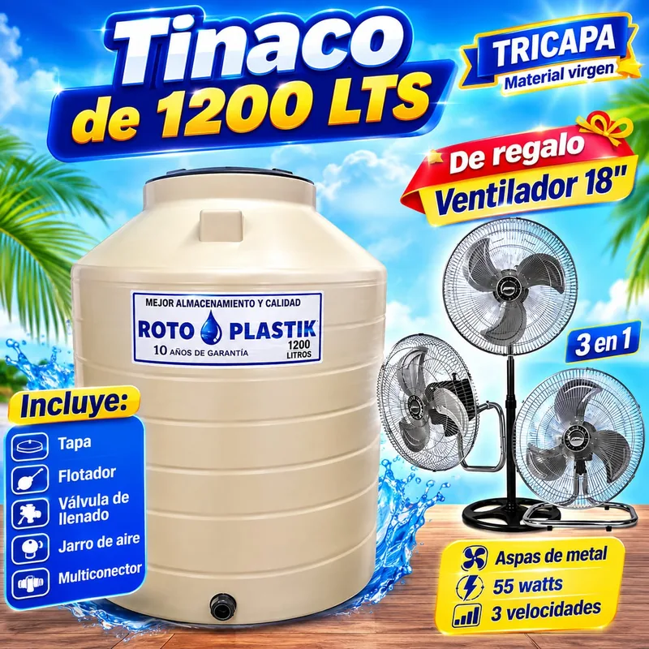
Tricapa de material virgen con 10 años de garantía. Incluye tapa, flotador, válvula de llenado, jarro de aire y multiconector. De regalo, un ventilador de 18″ 3 en 1.
Quiero esta promociónCalculadora de capacidad
Mueve el control, elige tus días de reserva y descubre el tinaco ideal. Es una estimación rápida para que llegues a la plática con las ideas claras.
0%de ocupación
Te recomendamos
Altura 1.50 m · Diámetro 1.08 m
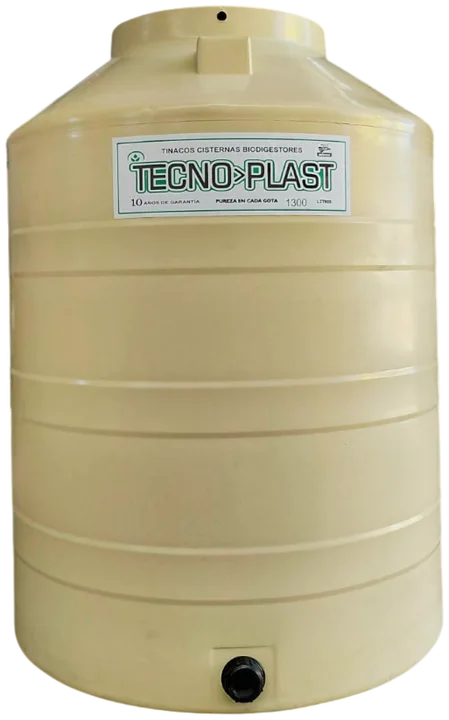
Alcanza para 4 personas con 2 días de reserva y deja un margen de seguridad.
Sí, quiero este tinacoPor qué Cassan
10años
Tinacos, cisternas y biodigestores de marcas reconocidas, pensados para resistir el uso diario. Los tinacos Tecno>Plast incluyen 10 años de garantía*.
* Consulta condiciones con un asesor.Más producto por tu dinero, sin sacrificar calidad.
Hablas con una persona que entiende de agua y te guía paso a paso.
+45 modelos
De 200 a 10,000 litros, más bases, accesorios y calentadores solares.
Agua, energía y dinero: lo que cuidas hoy, lo ahorras mañana.
Visítanos en Santa Cruz Amilpas, conoce los productos en persona y llévate la asesoría que necesitas.
Ver cómo llegarAsí de fácil
Escríbenos por WhatsApp o llena el formulario: qué producto buscas, capacidad aproximada y para qué lo usarás.
Revisamos medidas, espacio y presupuesto contigo para recomendarte la mejor opción, con precios competitivos.
Confirmas tu producto y listo: más agua disponible, menos preocupaciones y un gasto mucho más inteligente.
Preguntas frecuentes
Si no encuentras tu respuesta aquí, escríbenos. Con gusto platicamos.
Tengo otra duda, quiero preguntarEl tinaco tricapa suma una capa intermedia que ayuda a bloquear la luz, lo que contribuye a mantener el agua más limpia por más tiempo. El bicapa es una opción resistente y práctica para el uso diario. Si no sabes cuál te conviene, te asesoramos sin compromiso.
Todos nuestros tinacos incluyen flotador, válvula de llenado, jarro de aire y multiconector.
Las cisternas se venden sin equipo. También contamos con tapa de estructura metálica cuadrada, ideal para cisternas, y te orientamos sobre lo que necesitas para completar tu instalación.
Como referencia, una persona consume alrededor de 150 litros al día. Con nuestra calculadora de capacidad puedes estimar los litros según las personas de tu casa y los días de reserva que quieres tener, y te recomendamos el tinaco ideal.
Manejamos calentadores solares HGOVERDE de 8 tubos (2 personas), 10 tubos (3 personas), 12 tubos (4 personas) y 15 tubos (6 personas).
El biodigestor es un sistema para el tratamiento práctico de las aguas residuales de una casa o negocio. Tenemos modelos de 600, 1,300 y 3,000 litros.
Los tinacos Tecno>Plast indican 10 años de garantía en su etiqueta. Pregunta a un asesor por las condiciones y por la garantía del resto de los productos.
Escríbenos por WhatsApp al 951 228 2339, llena el formulario de esta página o visítanos en Benito Juárez #133, Col. Popular Independencia, Santa Cruz Amilpas, Oaxaca. Te asesoramos y cotizamos sin compromiso.
Tu agua, tu tranquilidad
Cuéntanos qué necesitas y te respondemos por WhatsApp con la mejor opción. Sin presión, sin compromiso.
Contacto
Déjanos tus datos y abre la conversación por WhatsApp con tu solicitud ya redactada. También puedes visitarnos o llamarnos.